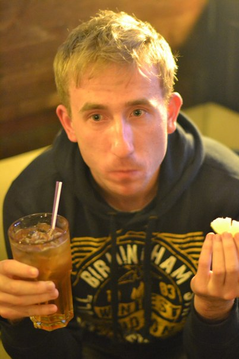
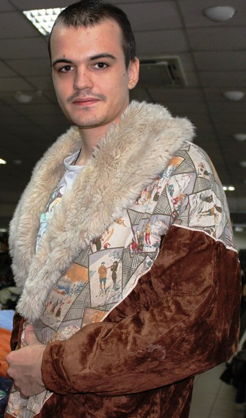
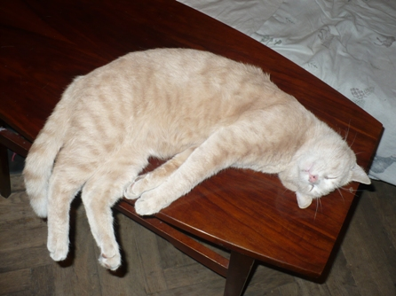

Одесский фан-клуб Мадонны, как и положено всему одесскому, зародился на кухне коммуналки по адресу Большая Арнаутская, 15. Случилось это
в далеком 75-ом году. Участники клуба занимались запрещенным тогда искусством Тайо-хуыо, изучали сольфеджио, возносили хвалу ООП, имели связь с космосом и питались лучами солнца... в общем, практиковали все странноватые практики кроме уринотерапии. Изначально, кумиром и объектом идолопоклонничества был Аркадий Укупник. Однако, после того, как директор фан-клуба, Александр Загоруйко, в 2012-ом году съездил на концерт Мадонны в Киев, участники на общем собрании решили, что, несомненно, необходимо пересмотреть свои взгляды на жизнь и на сущность сообщества. "На концертах Аркадия Укупника членам фан-клуба всегда доставались места на галерке, в то же время, на выступлении Мадонны я видел ее на расстоянии вытянутой руки" - говорит директор фан-клуба Александр Загоруйко.
Ниже предоставлены фото участников.

Основатель и директор клуба Александр Загоруйко

Сторож Константин Якимов

кот Пончик